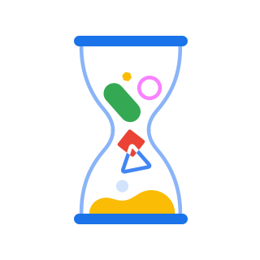

<style include="cr-shared-style shimless-rma-shared">
  #performUpdateButton {
    border-color: var(--google-blue-600);
  }

  #restartIcon {
    padding-inline-start: 8px;
  }

  #retryIcon {
    padding-inline-end: 8px;
  }

  #updateIcon {
    color: var(--cros-icon-color-secondary);
  }
</style>
<base-page equal-panes>
  <div slot="left-pane">
    <h1 tabindex="-1">[[i18n('osUpdateTitleText')]]</h1>
    <div id="updateInstructionsDiv"
        hidden$="[[!shouldShowUpdateInstructions(updateInProgress,
        osUpdateEncounteredError)]]">
      <div hidden$="[[isCompliant]]" class="instructions">
        <div inner-h-t-m-l="[[verificationFailedMessage]]"></div>
        <div>[[i18n('osUpdateUnqualifiedComponentsBottomText')]]</div>
      </div>
      <div hidden$="[[!isCompliant]]" class="instructions">
        [[i18n('osUpdateOutOfDateDescriptionText')]]
      </div>
      <div id="versionInfo" class="icon-message">
        <iron-icon id="updateIcon" class="small-icon"
            icon="shimless-icon:info">
        </iron-icon>
        <span class="instructions">[[currentVersionText]]</span>
      </div>
      <cr-button id="performUpdateButton" disabled="[[allButtonsDisabled]]"
          on-click="onUpdateButtonClicked">
          [[updateVersionButtonLabel]]
        <iron-icon id="restartIcon" icon="shimless-icon:update"
            class="small-icon-base">
        </iron-icon>
      </cr-button>
    </div>
    <div id="updateStatusDiv" class="icon-message" hidden$="[[!updateInProgress]]">
       <paper-spinner-lite class="small-spinner" active>
      </paper-spinner-lite>
      <span class="instructions">[[i18n('updatingOsVersionText')]]</span>
    </div>
    <div id="updateErrorDiv" hidden$="[[!osUpdateEncounteredError]]">
      <div id="updateErrorInstructionsDiv" class="icon-message">
        <iron-icon class="small-icon warning-icon"
            icon="shimless-icon:warning">
        </iron-icon>
        <span class="instructions">[[i18n('updatingOsErrorMessage')]]</span>
      </div>
      <cr-button id="retryUpdateButton" disabled="[[allButtonsDisabled]]"
          on-click="onRetryUpdateButtonClicked">
          <!-- TODO(swifton): Replace this with the real retry icon when it's ready. -->
          <iron-icon id="retryIcon" icon="shimless-icon:update"
            class="small-icon-base">
          </iron-icon>
          [[i18n('retryButtonLabel')]]
      </cr-button>
    </div>
  </div>
  <div slot="right-pane">
    <div class="illustration-wrapper" aria-hidden="true">
      
    </div>
  </div>
</base-page>

<cr-dialog id="unqualifiedComponentsDialog" on-cancel="closeDialog"
    ignore-popstate>
  <div slot="title">[[i18n('unqualifiedComponentsTitle')]]</div>
  <div slot="body" id="dialogBody">[[unqualifiedComponentsText]]</div>
  <div slot="button-container">
    <cr-button class="action-button" on-click="closeDialog">
      [[i18n('okButtonLabel')]]
    </cr-button>
  </div>
</cr-dialog>
